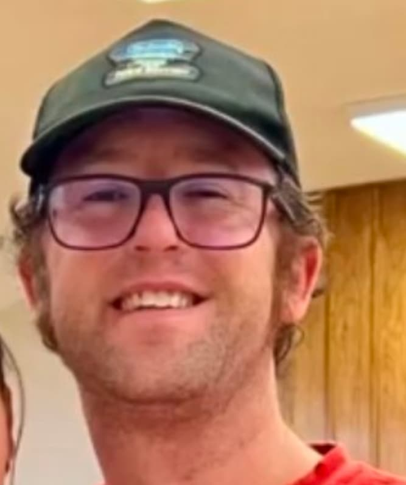

Scott Smith | WDD 130
Hi I'm Scott! I am 42 years old and I live in Southern California with my awesome wife and four awesome kids. I am a Quality Assurance Lead at a place called Magnopus. I love frisbee, music, video games, hiking, drawing, playing guitar, playing with my kids, driving down the coast at sunset and lots of other stuff! I served my mission in the Georgia, Atlanta and then the Georgia Atlanta North Missions from 2002 to 2004. I love Georgia and I miss it. I had cancer when I was 14 and I lived with an internal prosthetic until January 2024 when I finally cut off my leg and starting using a external prosthetic. My life has improved immensely ever since!